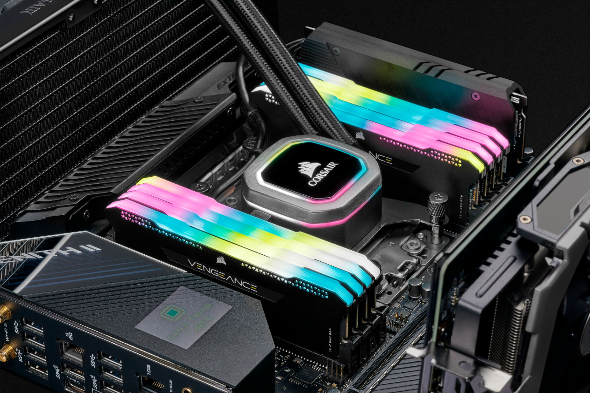

Operační paměť (RAM)
Operační, vnitřní neboli hlavní paměť počítače (anglicky main memory, internal memory, primary storage ) je paměť umožňující čtení i zápis používaná pro dočasné uložení zpracovávaných dat a spuštěných programů . Přístup k operační paměti je mnohem rychlejší než k vnější paměti ; procesor pomocí adresy přímo vybírá požadovanou buňku operační paměti. Paměť je s procesorem spojena pomocí rychlé sběrnice; pro další urychlení se mezi procesor a operační paměť vkládá rychlá vyrovnávací paměť typu cache , která mívá 2 až 3 úrovně.
V současných počítačích je operační paměť realizována jako polovodičová paměť typu RAM , která je volatilní (ztrácí informaci při odpojení napájení) a kvůli nižší ceně obvykle dynamická (obsah paměti je třeba občerstvovat pravidelným čtením všech řádků). Operační paměť je nepostradatelný fyzický prostředek, který je spravován jednou z hlavních části operačního systému. Uchovává nejen kód programů, respektive procesů spolu s mezivýsledky a výsledky jejich činnosti, ale i stav dalších prostředků a základní datové struktury jádra.

Terminologie
Zkratka RAM má v angličtině význam Random Access Memory. Toto slovní spojení se často překládá do češtiny jako „paměť s náhodným přístupem“. Proto někteří autoři dávají v češtině přednost spojení „paměť s libovolným přístupem“, „paměť s adresním přístupem“ nebo „paměť s přímým přístupem“.
Význam zkratky RAM (anglicky Random Access Memory) popisuje pouze jednu z důležitých vlastností takto označovaných pamětí – možnost přístupu v libovolném pořadí. Proto se lze zvláště ve starší české technické literatuře setkat s označením RWM-RAM, které vychází z původní názvoslovné normy ČSN 36 9001. Zkratka RWM (z anglického Read-Write Memory ) znamená, že paměť umožňuje čtení i zápis. Tomuto přístupu nelze upřít systematičnost; opakem RWM je ROM – paměť jen pro čtení; alternativou k RAM je např. SAM – paměť se sekvenčním přístupem nebo CAM – obsahem adresovatelná paměť neboli asociativní paměť. Firma Intel však používá jednoduché označení RAM od prvních pamětí vyrobených v 70. letech 20. století. Norma ISO/IEC 2382-12:1988, která byla v roce 1993 přijata jako ČSN a nahradila původní normu ČSN 36 9001, definuje RAM jako zařízení pro čtení a zápis.
Rozdělení ram podle uchovávání informací
Podle toho, zda paměť uchovává informace i po vypnutí napájení, dělíme paměti na:
- volatilní – při vypnutí napájení se informace smaže; takto se chovají polovodičové paměti RAM
- nevolatilní – informace vydrží vypnutí napájení; tuto vlastnost mají magnetické paměti (magnetické disky, paměti na tenkých vrstvách a v minulosti používané feritové paměti a bubnové paměti)
Dělení ram modulů
- DIPP, DILL, SIPP
- SIMM – (72pin, 30pin) – (Single Inline Memory Module)
- DIMM – 3,3 V a 5 V – (Dual Inline Memory Module) – Jedná se defakto o dva moduly SIMM
integrované na jedné desce.
- SDR – (Single Data Rate), spíše označovány jako SDRAM (Synchronous Dynamic RAM), starší typ pamětí typu DIMM (3,3, nebo 5 V), 168 pinů, kapacity od 16 MB do 512 MB, rychlost od 66 MHz do 133 MHz
- DDR – (Double Data Rate) novější typ pamětí typu SDR, 3,3 V, 184 pinů, jen
jeden
zářez jako pojistka, frekvence 100 až 200 MHz, kapacity od 64 do 2048 MB.
- DDR2 – novější typ pamětí DDR, podobné jako DDR, frekvence 200 až 533.33 MHz. Nevýhodou DDR2 jsou vyšší časy latence než u DDR.
- DDR3 – Frekvence sběrnice 400 až 1066.67 MHz.
- DDR4 – Prodej zahájen v roce 2014 a vytlačení DDR3 bylo očekáváno v roce 2016. Frekvence sběrnice 1066.67 až 2133.33 MHz
- DDR5-Zveřejněna v roce 2020.Frekvence sběrnice je 4800 MHz až 8400 MHz
- SO-DIMM – DIMM paměti používané pro notebooky (zmenšená velikost).
- RIMM – Rambus DRAM (RDRAM). Oproti DDR DIMMu má jen 16 bitů přenosové šířky, ale zato je výrazně rychleji taktován.
Srovnání DDR
| Max. kapacita | Max. propustnost | Uvedení | Frekvence | |
|---|---|---|---|---|
| DDR3 | 8 GB | 1.6 Gbps | 2007 | 2133MHz |
| DDR4 | 32 GB | 3.2 Gbps | 2012 | 3200MHz |
| DDR5 | 128 GB | 6.4 Gbps | 2020 | 6400MHz |